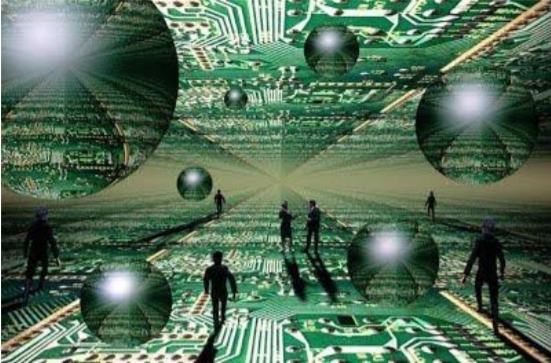
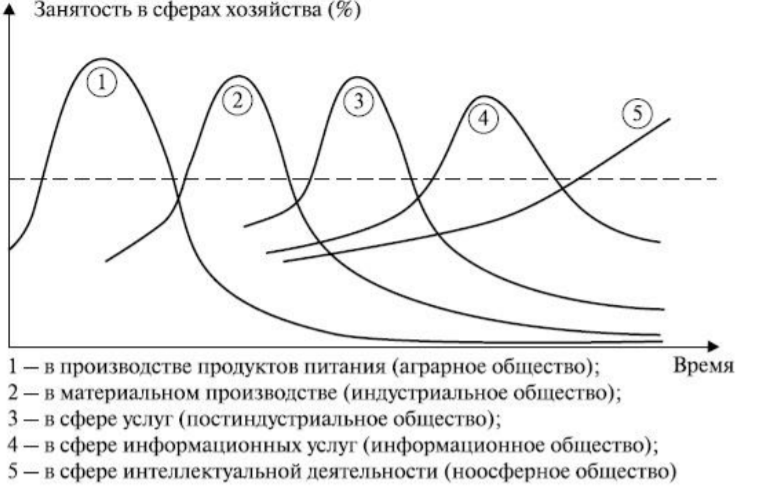
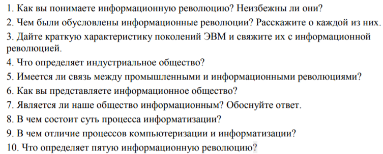

Задания для 1 курса. Практическое занятие №31
Информационное обществоОсновные вопросы: 1. Определение информационного общества 2. Критерии информационного общества 3. Концепция информационного общества 4. Признаки информационного общества 5. Контрольные вопросы Ход лекции: Информационное развитие человеческого общества - это процесс овладения тремя жизненноважными факторами: 1. Вещество 2. Энергия 3. Информация 1. Информационное общество В истории человеческого общества несколько раз происходили радикальные изменения в информационной области, которые можно назвать информационными революциями. Первая информационная революция была связана с изобретением письменности. Письменность создала возможности для накопления и распространения знаний, для передачи знаний будущим поколениям.  Вторая информационная революция (середина XVI века) была связана с изобретением книгопечатания. Стало возможным не только сохранять информацию, но и сделать ее массово-доступной. Третья информационная революция (конец XIX века) была обусловлена прогрессом средств связи. Телеграф, телефон, радио позволили оперативно передавать информацию на любые расстояния. Четвертая (70-е гг. XX в.) связана с изобретением микропроцессорной технологии и появлением персонального компьютера. На микропроцессорах и интегральных схемах создаются компьютеры, компьютерные сети, системы передачи данных (информационные коммуникации). Этот период характеризуют три фундаментальные инновации: • переход от механических и электрических средств преобразования информации к электронным; • миниатюризация всех узлов, устройств, приборов, машин; • создание программно-управляемых устройств и процессов. Сегодня мы переживаем пятую информационную революцию, связанную с формированием и развитием трансграничных глобальных информационнотелекоммуникационных сетей, охватывающих все страны и континенты, проникающих в каждый дом и воздействующих одновременно и на каждого человека в отдельности, и на огромные массы людей. Наиболее яркий пример такого явления и результат пятой революции - Интернет. Суть этой революции заключается в интеграции в едином информационном пространстве по всему миру программно-технических средств, средств связи и телекоммуникаций, информационных запасов или запасов знаний как единой информационной телекоммуникационной инфраструктуры, в которой активно действуют юридические и физические лица, органы государственной власти и местного самоуправления. В итоге неимоверно возрастают скорости и объемы обрабатываемой информации, появляются новые уникальные возможности производства, передачи и распространения информации, поиска и получения информации, новые виды традиционной деятельности в этих сетях. Информационное общество — общество, в котором большинство работающих занято производством, хранением, переработкой и реализацией информации, особенно высшей ее формы — знаний. Ученые считают, что в информационном обществе процесс компьютеризации даст людям доступ к надежным источникам информации, избавит их от рутинной работы, обеспечит высокий уровень автоматизации обработки информации в производственной и социальной сферах. Движущей силой развития общества должно стать производство информационного, а не материального продукта. Материальный же продукт станет более информационно емким, что означает увеличение доли инноваций, дизайна и маркетинга в его стоимости. В информационном обществе изменятся не только производство, но и весь уклад жизни, система ценностей, возрастет значимость культурного досуга по отношению к материальным ценностям. По сравнению с индустриальным обществом, где все направлено на производство и потребление товаров, в информационном обществе производятся и потребляются интеллект, знания, что приводит к увеличению доли умственного труда. От человека потребуется способность к творчеству, возрастет спрос на знания. Материальной и технологической базой информационного общества станут различного рода системы на базе компьютерной техники и компьютерных сетей, информационной технологии, телекоммуникационной связи. 2. Критерии информационного общества 1. Осознание обществом приоритетности информации перед другим продуктом деятельности человека. 2. Первоосновой всех направлений деятельности человека (экономической, производственной, политической, образовательной, научной, творческой, культурной и т.п.) является информация. 3. Информация же является продуктом деятельности современного человека. 4. Информация в чистом виде (сама по себе) является предметом купли – продажи. 5. Равные возможности в доступе к информации всех слоев населения. 6. Безопасность информационного общества, информации. 7. Защита интеллектуальной собственности. 8. Взаимодействие всех структур государства и государств между собой на основе ИКТ. 9. Управление информационным обществом со стороны государства, общественных организаций. Кроме положительных моментов прогнозируются и опасные тенденции: - все большее влияние на общество средств массовой информации; - информационные технологиимогут разрушить частную жизнь людей и организаций; - существует проблема отбора качественной и достоверной информации; - многим людям будет трудно адаптироваться к среде информационного общества. - существует опасность разрыва между "информационной элитой" (людьми, занимающимися разработкой информационных технологий) и потребителями. 3.Концепция информационного общества Название "информационное общество" впервые появилось почти одновременно в Японии и США. Создание самого термина "информационное общество" приписывается Ю. Хаяши, профессору Токийского технологического института. Контуры информационного общества были обрисованы в отчетах, представленных японскому правительству рядом организаций. Основной смысл концепции информационного общества, сформулированной в этих работах, может быть представлен следующими тезисами: -большая часть населения развитых стран занята информационной деятельностью; - одной из главных социальных ценностей, объединяющих общество, главным продуктом производства и основным товаром становится информация; - власть в обществе переходит в руки информационной элиты; - классовая структура общества лишается смысла, постепенно уступает место элитарномассовой структуре. Исчезает пролетариат, а с ним и все противоречия, появляется "когнитариат" и новое компьютерное поколение свободных людей - "гомоинтеллектус". Это технократическое определение может вызывать определенные вопросы, однако до настоящего времени, несмотря на обилие публикаций, не существует четко сформулированных признаков перехода к информационному обществу. Достаточно правильно охарактеризовал эту ситуацию Фрэнк Уэбстер: "Читая литературу об информационном обществе, просто диву даешься, сколь велико число авторов, оперирующих неразработанными определениями предмета, о котором пишут" . Сформулировать эти признаки трудно, так как мы сами являемся непосредственными участниками этого сложного, динамического, многоаспектного и, самое главное, развивающегося процесса. На необходимость осмысления происходящих изменений указывает то, что к этой работе подключаются ученые, работающие на стыке таких дисциплин, как социология, математика, философия, экономика и география.  Наиболее краткое определение, характеризующее барьер перехода к информационному обществу, сформулировано аналогично определению постиндустриального общества, в котором слово "услуги" заменено на "информационно-интеллектуальные услуги" и звучит так: Если в обществе более 50% населения занято в сфере информационноинтеллектуальных услуг, общество становится информационным. Этот социальноэкономический аспект занятости населения иллюстрируют наблюдения, предложенные Порэтом в виде диаграммы, которая представлена на рисунке. Уровень занятости 50% проходится дважды: первый раз при становлении новой общественной формации, второй - когда следующая волна развития покрывает общественные потребности, сформулированные на предыдущих этапах, меньшим количеством работников. Один из основоположников идей информационного общества Кастельс характеризует эволюцию занятости следующими параметрами: - вытеснение сельскохозяйственной занятости; - постоянное сокращение традиционной промышленной занятости; развитие услуг производителями (с акцентом на деловые услуги) и социальных услуг (с акцентом на услуги здравоохранения); - растущая диверсификация сферы услуг как источника рабочих мест; - быстрый рост управленческих, профессиональных и технических рабочих мест; - формирование пролетариата "белых воротничков", составленного из конторских служащих и работников торговли; - относительная стабильность существенной доли занятости в розничной торговле. В более подробных определениях информационного общества, предпринимающих попытку выделить и сформулировать основные характеристики информационного общества, традиционно исследуются следующие критерии. Технологический: анализируются информационные технологии, которые широко применяются в производстве, учреждениях, системе образования и в быту. Социальный: исследуются процессы, выступающие в качестве важного стимулятора изменения качества жизни. Экономический: информация составляет ключевой фактор в экономике в качестве ресурса, услуг, товара, источника добавленной стоимости и занятости. Политический: свобода информации, ведущая к политическому процессу, который характеризуется растущим участием и консенсусом между различными классами и социальными слоями населения. Культурный: признание культурной ценности информации. 4.Признаки информационного общества Наиболее четко перечень из 12-ти признаков, характеризующих информационное общество, представлен в работе Дона Тэпскотта "Электронно-цифровое общество". общество, представлен в работе Дона Тэпскотта "Электронно-цифровое общество". 1. Ориентация на знания. Умственный труд становится основой создания материальных ценностей, получения доходов и прибылей. Центр тяжести смещается от силы мышц к силе мысли. Знания становятся составляющей продукции. Распространяются технические средства, ориентированные на знания. Системы управленческой информации эволюционируют в системы знаний. 2. Цифровая форма представления объектов. Документы преобразуются в электронноцифровую форму. Общение между людьми приобретает форму единиц и нулей. Переход от аналоговой техники к электронно-цифровой (связь, системы фиксации событий, копирование). 3. Виртуальная природа. Физические предметы, организации могут становиться виртуальными. Виртуальные магазины, склады, рабочие места, бригады. Виртуализация данных, системы "виртуальная реальность" с воздействием на все органы чувств. 4. Молекулярная структура. Конец административно-командной иерархии. Отдельные работники и бригады получают свободу действий и возможность создавать ценности. Создаются компоненты типа "конструктора "Лего", предполагающие многократное и многофункциональное использование. 5. Интеграция. Межсетевое взаимодействие. Предприятие нового типа - это сетевой элемент. Появляются модульные независимые организации, составляющие единую сеть услуг и производства. Создание материальных ценностей, торговля, общественная жизнь основываются на глобальной инфоструктуре общего пользования. 6. Устранение посредников. Устранение в хозяйственной деятельности агентов, маклеров, оптовиков, отчасти розничных торговцев - всего, что стоит между изготовителем и потребителем, всех, кто выполнял функции усилителя сигналов в каналах связи организаций. 7. Конвергенция. Конвергенция ключевых отраслей экономики. Конвергенция организационных структур. 8. Инновационная природа. Нововведения - главная движущая сила экономической деятельности и успеха в деле. Основным источником ценностей становится человеческое воображение, а не традиционные факторы успеха - доступ к сырью, производительность, масштабы, стоимость рабочей силы. Нововведения в стратегии маркетинга, методах управления. 9. Трансформация отношений "изготовитель-потребитель". Стирание граней между изготовителем и потребителем. Знания, информация потребителя используется при создании продукта, особенно при разработке информационных систем, программных продуктов. Потребитель может отслеживать, корректировать и даже участвовать в создании продукта, ориентированного на его конкретные пожелания. 10. Динамизм. Новое общество действует в режиме реального времени. Торговля становится электронной, коммуникации выполняются мгновенно, получение истинной картинки процесса со всеми необходимыми параметрами обеспечивает непосредственный контроль и управление. Жизненный цикл продукции сокращается. 11. Глобальные масштабы. Знанию не ведомы границы. Экономика превращается в общемировую. Организация взаимной работы, сотрудничества не ограничивается пространством и временем. Работу можно выполнять в самых разных местах, в том числе на дому. Возрастает взаимозависимость стран. 12. Наличие противоречий. Возникают массовые социальные противоречия между трудящимися и уволенными рабочими, знания которых стали не нужны, знающими и невеждами, имеющими доступ к информационной магистрали и не имеющими его. 5. Контрольные вопросы  |